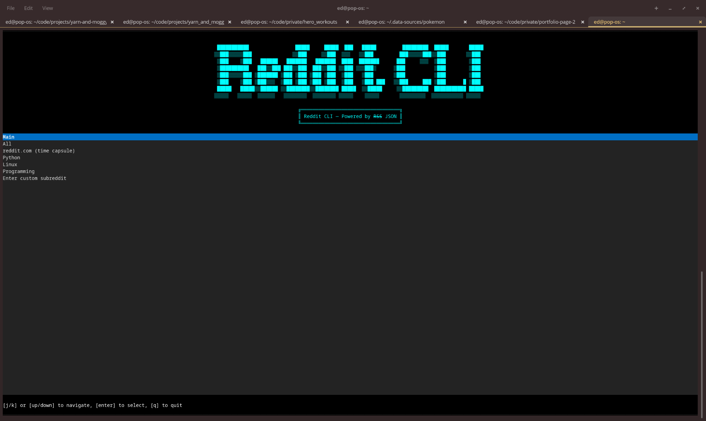
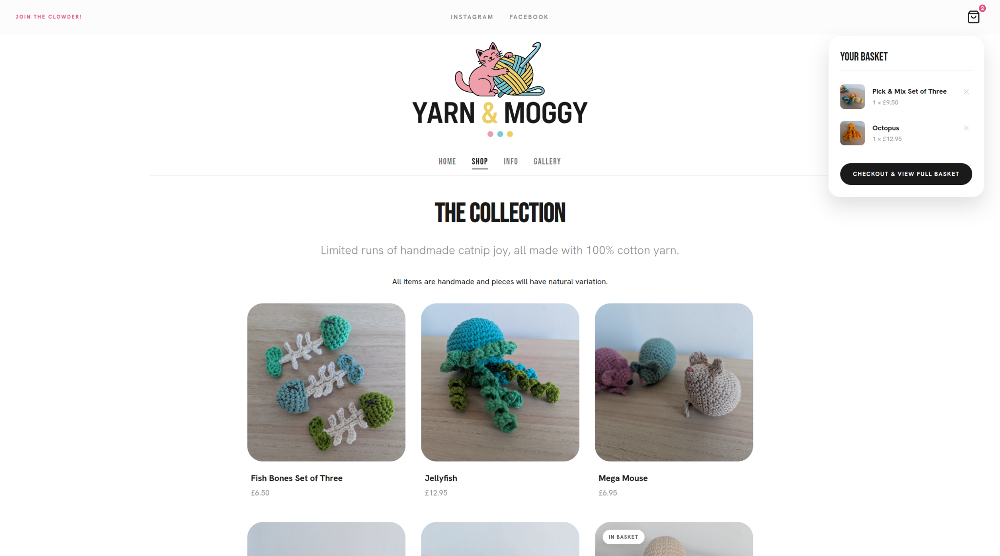

Platform & Systems Engineer
"Eliminate toil. Standardise workflows. Build durable abstractions."
What I Do
Automate ☠️
Replace manual, fragile processes with pipelines and services.
Platform 📦
Tooling and infrastructure that scales teams and workflows.
Abstract 🖤
Convert recurring patterns into repeatable systems.
Observe ✨
Measure, log, and make invisible complexity visible.
Own 🧰
Take ownership of the stack from concept to production.
Modes
Highlights




Selected Systems
Document Generation Service
Problem: Legacy TypeScript document generation service was poorly written, unmaintainable, and difficult to extend for new document types.
Solution: Rewrote the service in Python (FastAPI, Jinja2, WeasyPrint) with Pydantic-validated models, modular templating via Jinja2 extends/includes, and custom brand CSS. Deployed as a Docker container on AWS Lambda via CDK.
Lead Generation Scraping Pipeline
Problem: Sales team had no scalable way to identify and qualify leads; prospecting was manual and time-consuming, many phone numbers were disconnected.
Solution: Automated web scraping pipeline to extract, normalise and enrich lead data, feeding structured prospect information directly to the sales team.
Yarn & Moggy E-Commerce Platform
Problem: Off-the-shelf e-commerce SaaS (Shopify) cost £25+/month — unjustifiable for a small handmade goods shop.
Solution: Built a fully custom e-commerce platform on AWS: static GitHub Pages frontend with Jinja2 templating, FastAPI backend on Lambda, DynamoDB for orders, S3 for assets, Stripe for payments, Resend for transactional email. Infrastructure managed with AWS CDK.
Reddit CLI Dashboard
Problem: Wanted intentional, low-noise access to Reddit without the engagement-maximising web UI.
Solution: Read-only terminal dashboard built with Textual. Parses Reddit's JSON Feeds and renders a navigable TUI with feeds, post browsing and comment threads.
JobLens - Automation Pipeline
Problem: Manual job search and triage was slow and unscalable.
Solution: Scraping, normalisation, NLP scoring, LLM summarisation and automated ranking pipeline.
The Zote API
Problem: Wanted a personal API to experiment and demonstrate working knowledge of Java.
Solution: Built a Spring Boot API with Infrastructure as Code (Pulumi), CI/CD pipelines, and cloud-native deployment on Google Cloud.
Juggling Analytics & Practice System
Problem: Juggling progress hard to quantify; avoided difficult patterns; wanted structured practice and progress tracking.
Solution: Weighted random practice generator, archival system and analytics.
History
Green Energy Advice Bureau (GEAB)
Full Stack Developer — Remote / Sunderland (February 2026 – Present)
- 🡆 Document generation services
- 🡆 Lead generation & data pipelines
- 🡆 Full stack web development
Blueskeye AI
Data Ops Engineer — Nottingham, United Kingdom (January 2024 – December 2025)
- 🡆 End-to-end data infrastructure
- 🡆 Annotation systems
- 🡆 Offline AV capture
- 🡆 Automation & CI/CD
Le Wagon
Teaching Assistant — Remote (January 2024 – July 2025)
- 🡆 Python & SQL mentorship
- 🡆 Data Science bootcamp teaching
- 🡆 Debugging & architecture guidance
Date & Game
Development Team Lead — Remote (April 2021 – May 2023)
- 🡆 Multiplayer games
- 🡆 API integration
- 🡆 Distributed systems
Self-Employed / Matlock Brewing Company Ltd
Indie Game Developer / Head Brewer — Remote / Matlock, United Kingdom (March 2015 – January 2024)
- 🡆 Independent games & interactive experiences
- 🡆 Brewing operations & product development